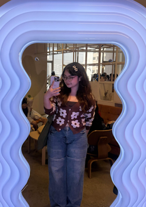
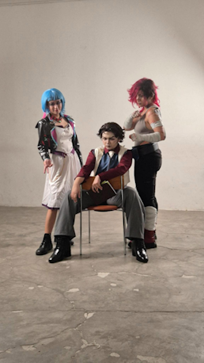

Hello! I’m Kyrelle Ramos, but most people know me as Rielle. I finished my high school education at St. Scholastica's College Manila, and I am currently a fourth-year Information Technology student at De La Salle University. While my academic foundation is built on technical structure, my true interest has always been deeply rooted in creativity. I'm deeply driven by the idea of turning abstract, maginative concepts into interactive realities. While I am still honing my skills and expanding my front-end skills, I love the challenge of balancing design aesthetics with seamless functionality.
~ Picture (Cosplay)

~ Vlog (Cosplay)
In my free time, I love diving into a mix of creative and active hobbies. You can usually find me cosplaying my favorite characters, watching C-dramas, or practicing new languages. To keep things balanced, I also love playing badminton and going on spontaneous cafe-hopping adventures to find the best local matcha latte.
~ My top 3 games that I've played
| # | Name | Comment |
| 1 | Baldur's Gate 3 | My ultimate favorite game! this is an absolute must-play for anyone who loves RPGs, fantasy, or stories where your choices truly matter. Within just a few hours, the game completely pulls you into a world where every decision naturally shapes quests, relationships, and major story outcomes without ever feeling rigidly scripted. The absolute highlight of the experience is the companions, who feel like real, complex people with their own distinct motives and personalities rather than generic sidekicks. |
| 2 | Dispatch | Another one of my favorite games! Dispatch is an exceptional story-driven game anchored by a deeply developed and highly likable cast of characters. The writing is a major highlight, packed with heartfelt banter and humor that makes the relationships between characters feel remarkably authentic. Beyond the narrative, the game offers a satisfying dual challenge; its tough narrative choices are matched by a genuinely fun dispatching mechanic that forces you to strategically manage your roster and carefully plan how to maximize each hero's unique potential. |
| 3 | Helldivers 2 | I love to make things go boom boom(380mm my beloved) |
~ My favorite track <3
This is easily my favorite track from the new album. It's beautifully written, emotional, and an instant standout.